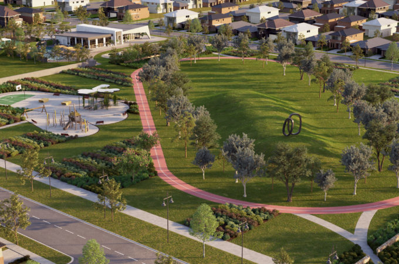
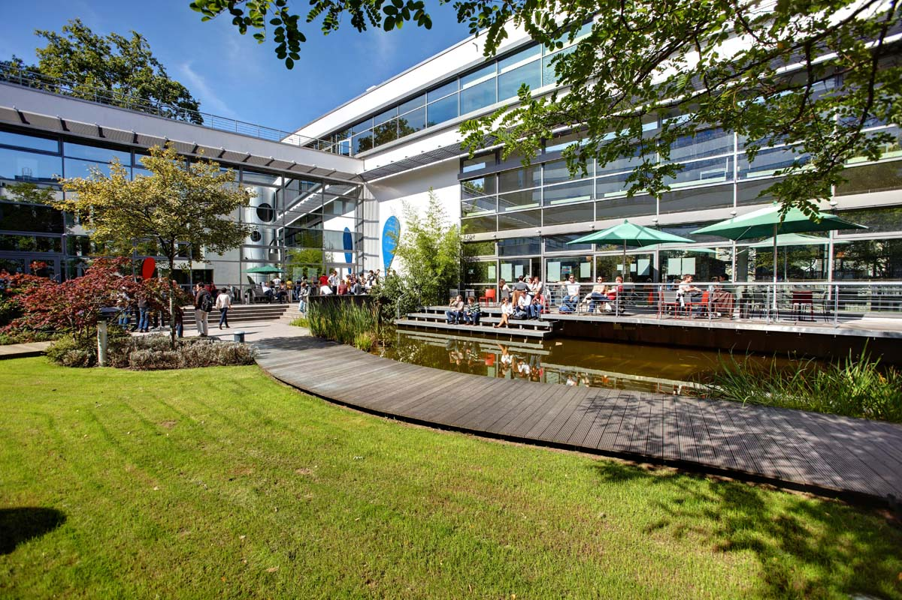

|

Our Community Learning Center
Set in 3 hectares of beautiful gardens, both the Primary and Secondary School buildings are safe and idyllic. Hogsmeade International offers perfect surroundings for perfect learning.
We are conveniently located a 2 minute walk from the bustling center of Hogsmeade, with excellent public transport links and a comprehensive list of bus routes.
Haganvald suburb is exclusive within the Hogsmeade community, with high security patrols helping children and parents feel safe and secure.
Every school day, our teachers strive to create an exciting and inspiring learning experience for every child. Our school will be the stage for many of your child's most exciting days, from eye-opening discoveries in the science labs to great sporting victories and thrilling performances on stage in our 300-seater auditorium.
Our Primary School students explore their creative talents in a dedicated arts and crafts centre, and benefit from an IT room, music rooms, a space for movement and dance, and three separate playgrounds. Early Years students have dedicated classrooms and a play area.
Our Secondary School facilities are set up to support students as they master a wide range of subjects. There are rooms for design technology, computer technology, art and design, music and drama. Students can explore the wonders of science in one of five science laboratories, or revise for their Diploma Programme in a dedicated study room.
The Hogsmeade International School
|